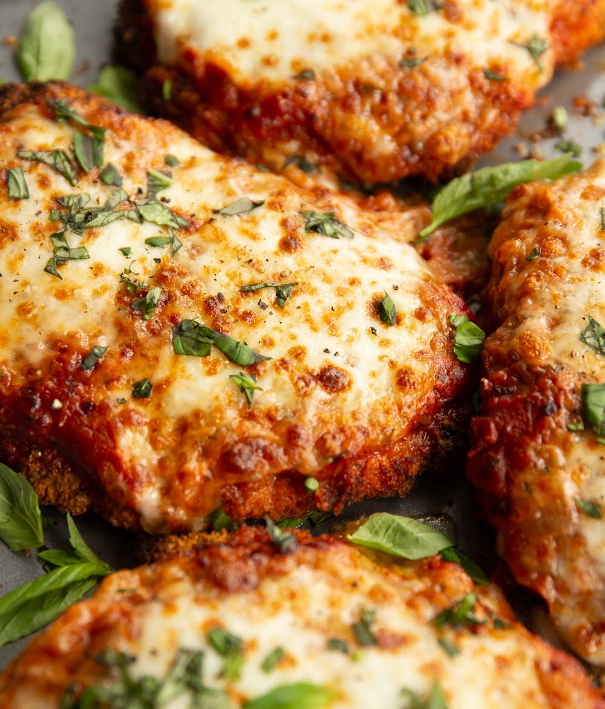

Chicken Parmesan

Description
Chicken parmesan is a baked chicken breast with a crispy crust and delicious pasta and cheese topping. This easy recipe is savory and perfect for chicken and cheese lovers. Chicken parmesan is also a great addition on top of pasta recipes.
Ingredients
- 4 boneless chicken breast halves
- Salt and pepper
- 1 cup panko bread crumbs
- 2 large eggs
- 3/4 cup grated Parmesan cheese
- 2 tablespoons flour
- 1/2 cup tomato sauce
- 1/2 cup olive oil
Steps
- Preheat oven to 450 degrees F (230 degrees C).
- Firmly pound chicken with mallet to 1/2 inch thickness.
- Season chicken with salt and pepper, then coat with sifted or strained flour.
- Beat eggs and set aside in bowl.
- Mix panko bread crumbs and cheese and set aside in a bowl.
- Dip each chicken breast in eggs, then the bread crumb mixture. Let chicken rest for 15 minutes.
- Heat olive oil in skillet to shimmer. Cook chicken in oil for 2 minutes on each side.
- Bake chicken in preheated oven for 15 to 20 minutes or to an internal temperature of 165 degrees F (74 degrees C).